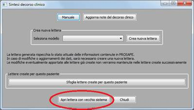

Premendo l’apposita icona è possibile generare la lettera
contente la sintesi decorso clinico del ricovero aperto.
L’utilità
che genera la sintesi del decorso clinico è molto articolata e consente di
creare le lettere sulla base dei modelli scelti e personalizzati
dall’amministratore. In particolare, i modelli attualmente disponibili tra cui
l’amministratore può scegliere sono di due tipologie:
-
Modello dimissione (la sintesi
contenente tutti i dati che viene usata generalmente come lettera di dimissione
ospedaliera)
-
Modello ingresso (la sintesi delle
informazioni all’ammissione del paziente che viene usata generalmente come
frontespizio della cartella clinica cartacea).
Il
programma utilizza tre diversi formati di testo per permettere una maggiore
flessibilità di utilizzo da parte degli utenti finali. I formati di testo a
disposizione in PROSAFE per la sintesi del decorso clinico sono:
- DOCX (Office 2007 e succ.:
Word)
-
RTF (editor
di testo base)
-
ODT (Open Office)
I
due modelli preconfigurati in PROSAFE sono
disponibili in questi tre formati.
Se l’amministratore non ha scelto nessun modello allora non
è possibile creare la sintesi del decorso clinico.
Nel CRF c’è una sezione “Note decorso clinico” che permette
di aggiungere delle informazioni nella sintesi del decorso clinico. Questi
campi vengono automaticamente importati nella lettera ogni volta che questa
viene generata tramite la procedura descritta in seguito.
Figura 1 - Note per sintesi decorso clinico
L’utente può:
1.
Creare una nuova lettera mediante i
modelli resi disponibile dall’amministratore
2.
Sfogliare le lettere già create
3.
Visualizzare la lettera creata con il
vecchio sistema di sintesi decorso clinico (solo nel caso in cui questo formato
esista).
1.
Nel caso decida di creare una nuova
lettera deve scegliere con quale modello intende generarla. PROSAFE crea la
nuova lettera e permette di aprirla ed eventualmente modificarla mediante il
software associato al formato scelto.
Figura 2 - Crea nuova sintesi decorso clinico
PROSAFE
genera una lettera combinando i dati inseriti nel CRF con del testo in modo che
il risultato sia una lettera con un linguaggio più elaborato.
2.
Nel caso decida di visionare le lettere
già create è necessario premere su “Sfoglia lettere create” e scegliere,
mediante esplora risorse automaticamente aperto da PROSAFE, la lettera che si
vuole visionare.
Figura 3 - Sfoglia lettere esistenti
3.
Nel caso il ricovero avesse una lettera
creata con il sistema precedente per la generazione della sintesi decorso
clinico è possibile utilizzare il vecchio sistema per apporre modifiche o
visualizzare la lettera.

Figura 4 - Apri lettera precedente creata con il vecchio sistema
N.B.
La lettera che viene generata con “Crea nuova lettera” include lo stato attuale
delle informazioni contenute in PROSAFE. In caso di modifiche o aggiornamenti
dei dati, questi non verranno inclusi nelle lettere esistenti create
precedentemente. Sarà quindi necessario creare una nuova lettera. Per questa
ragione si consiglia di creare la lettera solo quando le informazioni (per il
modello ingresso o per il modello dimissione) sono complete. Le modifiche
eventualmente inserite, mediante l’utilizzo dell’editor
(word, open office,…), nelle lettere precedentemente create non vengono
automaticamente riportate nelle nuove lettere create successivamente.